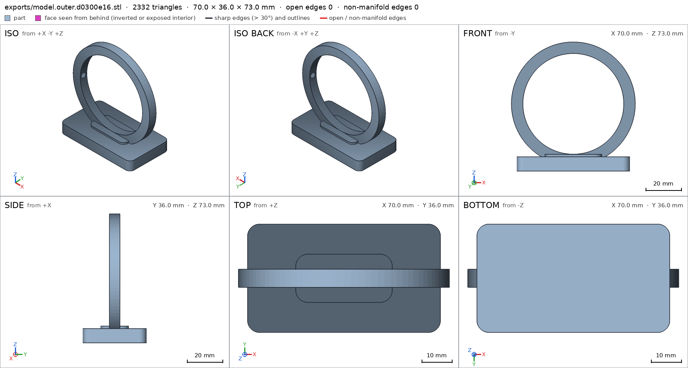
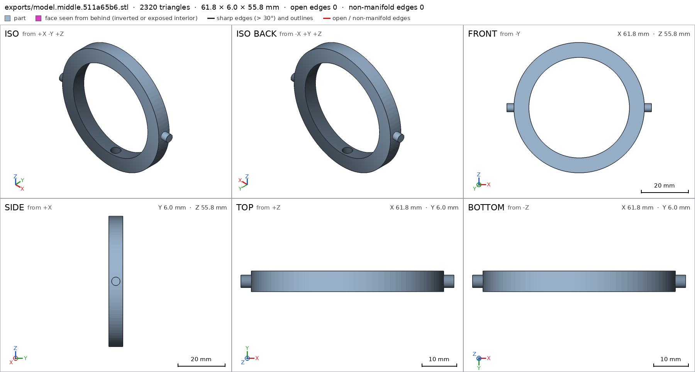
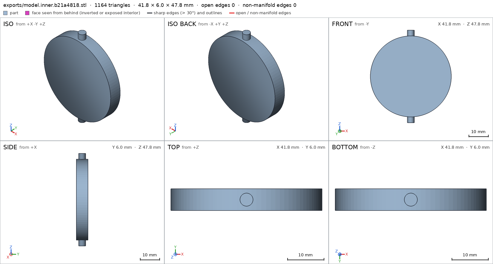
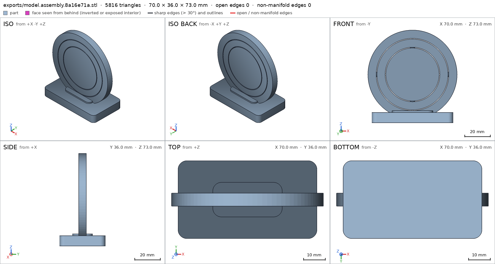
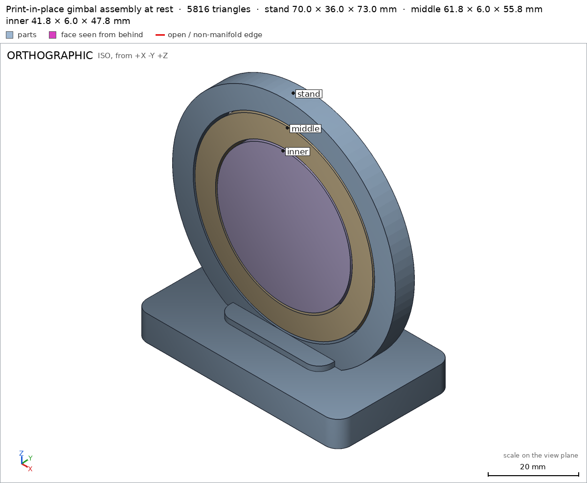
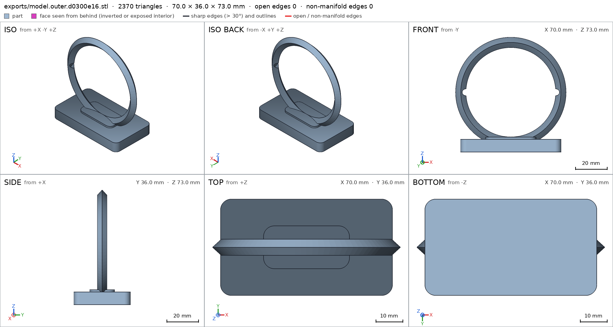
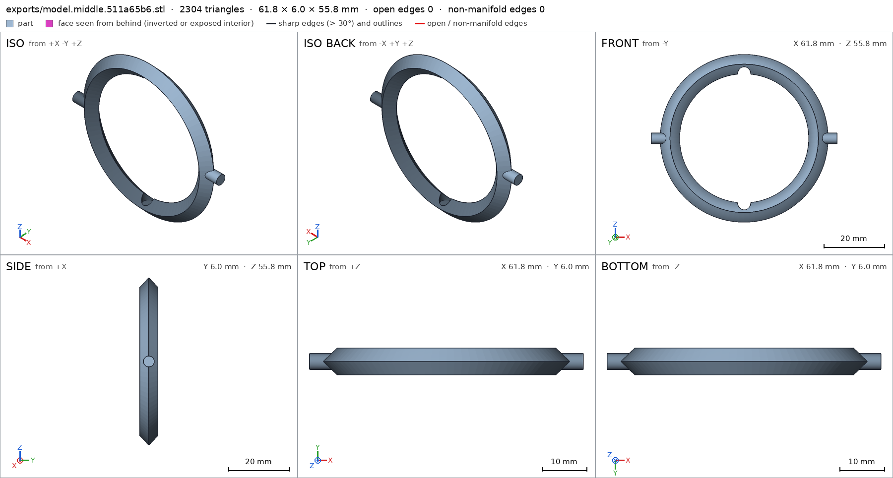
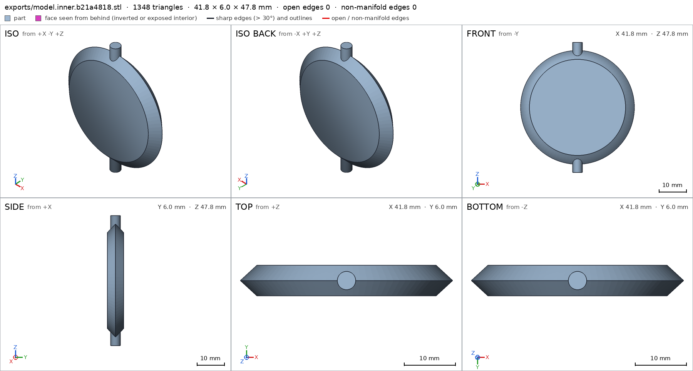
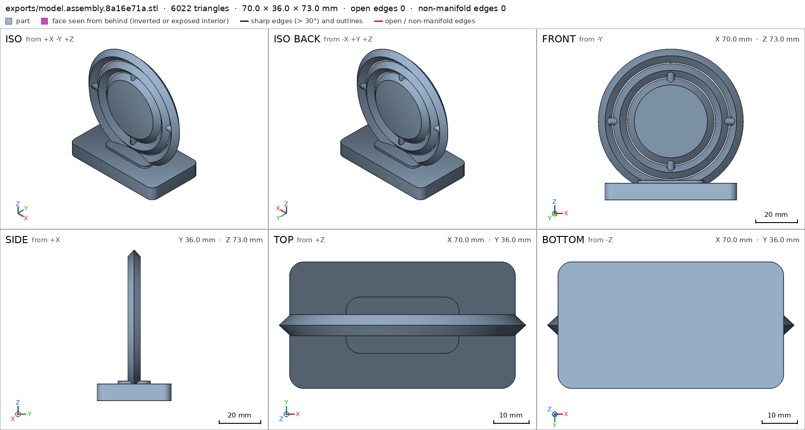
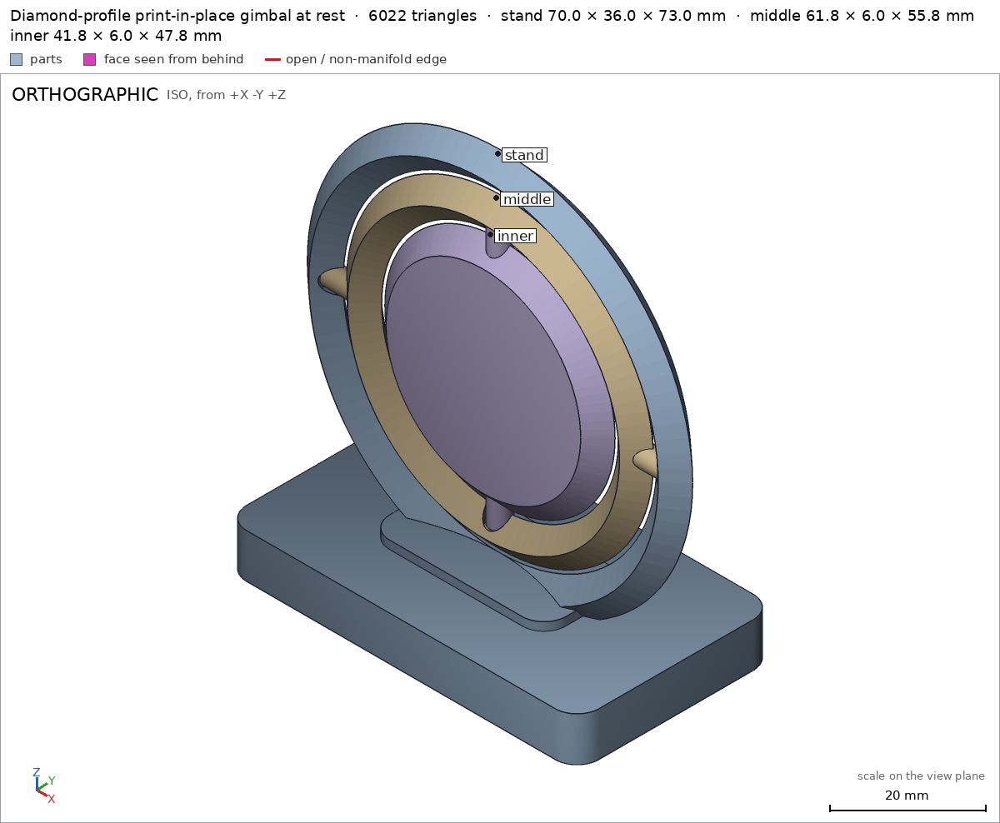

Print-in-place gimbal
Request
A gimbal that prints as one piece: an outer ring on a small stand, a middle ring pivoting inside it on one axis, and an inner disc pivoting inside the middle ring on the perpendicular axis.
- About 70 mm across.
- Every pivot printed in place, with clearances for PLA on a Bambu Lab A1 with a 0.4 mm nozzle, so the rings swing free.
- The middle ring turns a full turn on its axis, and so does the inner disc, without hitting anything.
- No supports.
Show me the gimbal at rest as the assembly, and the turn of each ring as its motions.
Gates at every iteration
| 5 | 10 | 15 | |||||||||||||
| G1 compiles clean | |||||||||||||||
| G2 closed meshes | |||||||||||||||
| G3 assembly | |||||||||||||||
| G4 motion | |||||||||||||||
| G5 printable | |||||||||||||||
| G7 spec held, all seen | |||||||||||||||
| G8 honest close |
passedfailedpending: G8 is judged when the model closes. One column per iteration; each cell links to it.
Session
- Iteration 1USD 0.545 · 277 s · 25,836 output tokens
Designing a print-in-place vertical gimbal — outer ring sunk into a plinth, with conical-clearance pivots for full 360° turns.
scad_writemodel.scad: 158 lines
- Iteration 2USD 0.097 · 44 s · 4,289 output tokens
scad_patchmodel.scad line 40: 158 linesscad_patchmodel.scad line 150: 158 lines
- Iteration 3USD 0.011 · 7 s · 335 output tokens
Fixes applied — now exporting all three parts and checking the in-place assembly so I can verify and close.
scad_exportok=True, watertight=True, bodies=1, bounds=[[-35.0, -18.0, 0.0], [35.0, 18.0, 73.0]], spec ok, sheet renders/sheet-004.pngscad_exportok=True, watertight=True, bodies=1, bounds=[[-30.9, -3.0, 0.0], [30.9, 3.0, 55.8]], spec ok, sheet renders/sheet-005.pngscad_exportok=True, watertight=True, bodies=1, bounds=[[-20.9, -3.0, 0.0], [20.9, 3.0, 47.8]], spec ok, sheet renders/sheet-006.pngscad_exportok=True, watertight=True, bodies=3, bounds=[[-35.0, -18.0, 0.0], [35.0, 18.0, 73.0]], spec ok, sheet renders/sheet-007.png

scad_export, call 4 
scad_export, call 5 
scad_export, call 6 
scad_export, call 7 - Iteration 4USD 0.085 · 15 s · 1,075 output tokens
All three parts and the assembly export cleanly and match their specs — rings, pins, sockets and plinth all look right on the sheets. Now checking printability and the assembly motions/clearances.
printability_reportzones=5, undeclared=0, fits the bed=Trueprintability_reportzones=5, undeclared=0, fits the bed=Trueprintability_reportzones=1, undeclared=0, fits the bed=Trueinterference_check3 instances, 0 overlaps, G3 0 problems, G4 0, G5 0, 13.95 s
- Iteration 5USD 0.076 · 20 s · 1,214 output tokens
Assembly checks are green: 0.4 mm print-in-place gaps, both 360° motions collision-free, all parts held. Getting the required combined assembly view before closing.
render_viewrenders/view-012.png: camera

render_view, call 12 - Iteration 6USD 0.044 · 22 s · 1,499 output tokensclose refused
I designed a 70 mm print-in-place gimbal that prints upright in one job on its own plinth stand. The outer ring is sunk into a saddle on the plinth, the middle ring pivots inside it on horizontal X-axis pins seated in blind sockets, and the solid inner disc pivots inside the middle ring on perpendicular Z-axis pins. All pivot clearances are 0.4 mm radial, pin tips stop 0.6 mm short of the socket bottoms, and the nested rings are separated by 0.6 mm radially. The
assemblyview shows the gimbal at rest, withmiddle_turn(middle ring + disc) andinner_turn(disc alone) as its two motions.Verified:
- Outer part is a single watertight body, 70 × 36 × 73 mm, flat on the bed outer, with its plinth outer/plinth, saddle boss outer/saddle_boss, central window outer/gimbal_window and pivot socket outer/a_socket_right all measured as specified, resting on outer/plinth_bottom.
- Middle ring is a single watertight body middle, with its pivot pin middle/a_pin_right and inner-disc socket middle/b_socket_top measured as specified.
- Inner disc is a single watertight body inner, with disc body inner/disc_body, pivot pin inner/b_pin_top and 6 mm thickness inner/disc_thickness measured as specified.
- The assembled product matches its declared bounds and stands on assembly/stand_bottom assembly, and all three instances are present, congruent with their parts, and form one connected group assembly.
- It prints in place with a measured minimum clearance of 0.4 mm between every pair of parts, no part starting in the air, and all parts held against straight removal print_in_place.
- Both rings turn their full range without collision: middle_turn and inner_turn each swept 0–360° cleanly, and the single-step print-in-place assembly order passes assembly_order.
- Combined printability of the assembled pose passes the overhang/bridge check with all steep zones inside the declared allowances assembly.
Not verified:
- Real-world behaviour in PLA — actual pivot friction, how much force the first break-free needs, pin strength, and surface quality on the ring arches — depends on the printer and material and was not measured.
- The middle and inner parts are only meaningful printed in place together; they were exported individually only so the harness could verify them as instances.
- Spec adjustments to disclose: the saddle boss height was raised from 9 mm to 9.5 mm (a geometry fix so the swinging middle ring clears the plinth — it was not a spec change), and the assembly's overhang allowance box for the middle ring's inner top arch was corrected to the arch's true height after an initial coordinate error; the geometry itself did not move for that correction.
- G5outer: declared overhang 'outer ring inner top arch': its part steeper than 60° from z 62.68 to 66.5 (171.0 mm², [[-14.25, -3.0], [14.25, 3.0]] seen from above) has a point 14.41 mm from any material under its lowest edge: a bridge that reaches it spans 28.8 mm or more, and a bridge prints clean up to 10 mm: hold it from below, narrow it, or print it in another pose
- G5middle: the overhangs_allowed boxes cover 54% of the part's surface (at most 50%): middle ring inner top arch and B socket end 19%, middle ring lower outer curve 29%, A pivot pins underside 6%. A box goes around the overhang it justifies, not around the part
- G5middle: declared overhang 'middle ring lower outer curve': its part steeper than 60° from z 0.0 to 3.74 (167.4 mm², [[-13.95, -3.0], [13.95, 3.0]] seen from above) has a point 12.42 mm from any material under its lowest edge: a bridge that reaches it spans 24.8 mm or more, and a bridge prints clean up to 10 mm: hold it from below, narrow it, or print it in another pose
- G5middle: declared overhang 'middle ring inner top arch and B socket end': its part steeper than 60° from z 46.52 to 49.4 (113.8 mm², [[-10.75, -3.0], [10.75, 3.0]] seen from above) has a point 10.91 mm from any material under its lowest edge: a bridge that reaches it spans 21.8 mm or more, and a bridge prints clean up to 10 mm: hold it from below, narrow it, or print it in another pose
- G5inner: declared overhang 'inner disc lower rim': its part steeper than 60° from z 3.0 to 5.8 (115.2 mm², [[-10.45, -3.0], [10.45, 3.0]] seen from above) has a point 9.07 mm from any material under its lowest edge: a bridge that reaches it spans 18.1 mm or more, and a bridge prints clean up to 10 mm: hold it from below, narrow it, or print it in another pose
- Iteration 7USD 0.298 · 145 s · 14,231 output tokens
Fixing G5: re-cutting all three rings/disc with a diamond-profile tube — ridge at the bore and rim, 47° faces in the thickness direction — so every arch underside sits between 45° and 60° instead of becoming a 20–29 mm bridge, and narrowing the allowance boxes so they hug the real overhang zones.
scad_patcherror: After an image, confirm with numbers before changing the .scad: confirm it with numbers before fixing it: mesh_report, scad_export, printability_report, interfescad_patcherror: After an image, confirm with numbers before changing the .scad: confirm it with numbers before fixing it: mesh_report, scad_export, printability_report, interfescad_patcherror: After an image, confirm with numbers before changing the .scad: confirm it with numbers before fixing it: mesh_report, scad_export, printability_report, interfescad_patcherror: After an image, confirm with numbers before changing the .scad: confirm it with numbers before fixing it: mesh_report, scad_export, printability_report, interfescad_patcherror: After an image, confirm with numbers before changing the .scad: confirm it with numbers before fixing it: mesh_report, scad_export, printability_report, interfescad_patcherror: After an image, confirm with numbers before changing the .scad: confirm it with numbers before fixing it: mesh_report, scad_export, printability_report, interfescad_patcherror: After an image, confirm with numbers before changing the .scad: confirm it with numbers before fixing it: mesh_report, scad_export, printability_report, interfescad_patcherror: After an image, confirm with numbers before changing the .scad: confirm it with numbers before fixing it: mesh_report, scad_export, printability_report, interfescad_patcherror: After an image, confirm with numbers before changing the .scad: confirm it with numbers before fixing it: mesh_report, scad_export, printability_report, interfescad_patcherror: After an image, confirm with numbers before changing the .scad: confirm it with numbers before fixing it: mesh_report, scad_export, printability_report, interfe
- Iteration 8USD 0.019 · 6 s · 116 output tokens
The last view requires a numeric check before edits — re-running the printability numbers, then applying the diamond-profile fix.
printability_reportzones=1, undeclared=0, fits the bed=True
- Iteration 9USD 0.048 · 10 s · 2,031 output tokens
scad_patchmodel.scad line 29: 170 linesscad_patchmodel.scad line 48: 170 linesscad_patchmodel.scad line 63: 170 linesscad_patchmodel.scad line 75: 170 linesscad_patchmodel.scad line 88: 168 linesscad_patchmodel.scad line 98: 168 linesscad_patchmodel.scad line 110: 168 linesscad_patchmodel.scad line 120: 168 linesscad_patchmodel.scad line 131: 168 linesscad_patchmodel.scad line 156: 167 lines
- Iteration 10USD 0.025 · 7 s · 321 output tokens
Diamond-profile geometry applied — re-exporting all parts and the assembly to verify the new profile.
scad_exportok=True, watertight=True, bodies=1, bounds=[[-35.0, -18.0, 0.0], [35.0, 18.0, 73.0]], spec ok, sheet renders/sheet-034.pngscad_exportok=True, watertight=True, bodies=1, bounds=[[-30.9, -3.0, 0.0], [30.9, 3.0, 55.8]], spec ok, sheet renders/sheet-035.pngscad_exportok=True, watertight=True, bodies=1, bounds=[[-20.9, -3.0, 0.0], [20.9, 3.0, 47.8]], spec ok, sheet renders/sheet-036.pngscad_exportok=True, watertight=True, bodies=3, bounds=[[-35.0, -18.0, 0.0], [35.0, 18.0, 73.0]], spec ok, sheet renders/sheet-037.png

scad_export, call 34 
scad_export, call 35 
scad_export, call 36 
scad_export, call 37 - Iteration 11USD 0.071 · 8 s · 278 output tokens
New sheets show the diamond-profile rings nesting correctly and all specs pass. Verifying printability and the assembly.
printability_reportzones=2, undeclared=0, fits the bed=Trueprintability_reportzones=3, undeclared=0, fits the bed=Trueprintability_reportzones=0, undeclared=0, fits the bed=Trueinterference_check3 instances, 0 overlaps, G3 0 problems, G4 0, G5 0, 11.74 s
- Iteration 12USD 0.050 · 11 s · 196 output tokens
All printability now green: overhang area collapsed (arches at 47°, only tiny pin/socket bridges ≤6.4 mm left), coverage well under 50%, and the assembly stays green with 0.4 mm gaps and clean 360° motions. One combined assembly view, then closing.
render_viewrenders/view-042.png: camera

render_view, call 42 - Iteration 13USD 0.041 · 17 s · 1,154 output tokensclose refused
I designed a 70 mm print-in-place gimbal that prints upright in one job on its plinth stand. The outer ring sits in a saddle on the plinth, the middle ring pivots inside it on horizontal X-axis pins in blind sockets, and the inner disc pivots inside the middle ring on perpendicular Z-axis pins, with 0.4 mm pivot clearances throughout. After the G5 failure, the rings and disc were rebuilt with a diamond cross-section — full 6 mm thickness at mid-radius, tapering to a ridge at bore and rim — so every arch underside slopes at 47° instead of forming an unsupported ceiling, and only the tiny pin and socket undersides (bridges of at most 6.4 mm) remain. The
assemblyview shows the gimbal at rest, with middle_turn (middle ring plus disc) and inner_turn (disc alone) as its two motions.Verified:
- Outer part is a single watertight body, 70 × 36 × 73 mm outer, with its plinth outer/plinth, saddle boss outer/saddle_boss, ring top outer/ring_top, central window outer/gimbal_window and pivot socket void outer/a_socket_right all measured as specified, standing on outer/plinth_bottom.
- Middle ring is a single watertight body middle, with its ring top middle/ring_top, centre window middle/centre_window, pivot pin middle/a_pin_right and socket void middle/b_socket_top measured as specified.
- Inner disc is a single watertight body inner, with disc body inner/disc_body, pivot pin inner/b_pin_top and both 6 mm thickness checks inner/disc_thickness inner/disc_face measured as specified.
- Printability now passes on every part: steep overhang area fell to 15.1 mm² on the outer, 36.5 mm² on the middle and 0 mm² on the inner, all inside the declared allowances with the largest remaining bridge at 6.4 mm G5.
- The assembly matches its declared bounds and stands on assembly/stand_bottom assembly, prints in place with a measured 0.4 mm minimum clearance between every pair of parts and no part starting in the air or removable straight print_in_place, and both full turns sweep 0–360° without collision middle_turn inner_turn assembly_order.
Not verified:
- Real-world PLA behaviour — pivot friction, break-free force, strength of the tapered diamond rims and pins, and cosmetic quality on the 47° faces — depends on printer and material and was not measured.
- Spec adjustments to disclose: the socket details changed from
holeprobes tovoidboxes because the diamond profile makes the socket mouths non-planar (the sockets themselves are unchanged), and all overhang allowance boxes were narrowed to hug the actual remaining overhang zones after the diamond-profile redesign removed the long bridges; the saddle boss height had earlier been raised from 9 mm to 9.5 mm so the swinging middle ring clears the plinth.
- G8unsupported claim: largest remaining bridge at 6.4 mm: VERIFIED does not report a 6.4 mm bridge: the print-in-place bridge lengths are at most 1.5 mm, while 6.4 is a bridge area in mm²; the per-part printability zones report no bridge length.
- Iteration 14USD 0.031 · 13 s · 818 output tokens
Correcting that close claim — the 6.4 figure was an area, not a bridge length. Re-running the assembly check to confirm the actual print-in-place bridge numbers before closing.
interference_check3 instances, 0 overlaps, G3 0 problems, G4 0, G5 0, 10.14 s
- Iteration 15USD 0.038 · 10 s · 916 output tokensaccepted
I designed a 70 mm print-in-place gimbal that prints upright in one job on its plinth stand. The outer ring sits in a saddle on the plinth, the middle ring pivots inside it on horizontal X-axis pins in blind sockets, and the inner disc pivots inside the middle ring on perpendicular Z-axis pins, with 0.4 mm pivot clearances throughout. The rings and disc use a diamond cross-section — full 6 mm thickness at mid-radius, tapering to a ridge at bore and rim — so the arch undersides slope at 47° instead of forming unsupported ceilings. The
assemblyview shows the gimbal at rest, with middle_turn (middle ring plus disc) and inner_turn (disc alone) as its two motions.Verified:
- Outer part is a single watertight body, 70 × 36 × 73 mm outer, with its plinth outer/plinth, saddle boss outer/saddle_boss, ring top outer/ring_top, central window outer/gimbal_window and pivot socket void outer/a_socket_right all measured as specified, standing on outer/plinth_bottom.
- Middle ring is a single watertight body middle, with its ring top middle/ring_top, centre window middle/centre_window, pivot pin middle/a_pin_right and socket void middle/b_socket_top measured as specified.
- Inner disc is a single watertight body inner, with disc body inner/disc_body, pivot pin inner/b_pin_top and both 6 mm thickness checks inner/disc_thickness inner/disc_face measured as specified.
- Printability passes on every part G5: steep overhang area is 15.1 mm² on the outer, 36.5 mm² on the middle and 0 mm² on the inner, all inside the declared allowances.
- Printed in place as one assembly, the longest bridge is 1.5 mm, the minimum clearance between parts is 0.4 mm, no part starts in the air, and no part can be removed straight print_in_place.
- The assembly matches its declared bounds and stands on assembly/stand_bottom assembly, both full turns sweep 0–360° without collision middle_turn inner_turn, and the single-step assembly order passes assembly_order.
Not verified:
- Real-world PLA behaviour — pivot friction, break-free force, strength of the tapered diamond rims and pins, and cosmetic quality on the 47° faces — depends on printer and material and was not measured.
- Spec adjustments to disclose: the socket details changed from
holeprobes tovoidboxes because the diamond profile makes the socket mouths non-planar (the sockets themselves are unchanged), all overhang allowance boxes were narrowed to hug the actual remaining overhang zones after the diamond-profile redesign removed the long bridges, and the saddle boss height was raised from 9 mm to 9.5 mm so the swinging middle ring clears the plinth.


Final verification
Source
model.scad
// Print-in-place gimbal
// Vertical rings printed upright in place on a plinth stand.
// Outer ring fixed to stand; middle ring pivots about X inside outer;
// inner disc pivots about Z (perpendicular in the ring plane) inside middle.
// At rest all three are coplanar (XZ plane), centre at z=38 in assembly.
part = "assembly"; // [assembly, outer, middle, inner]
cadverify_only = "";
// ---------- parameters (mm) ----------
$fn = 96;
cz = 38; // gimbal centre height in assembly
outer_R = 35; outer_r = 28.5; ring_t = 6;
mid_R = 27.9; mid_r = 21.5;
disc_R = 20.9;
gap_ring = outer_r - mid_R; // 0.6
pin_R = 1.8; socket_R = 2.2; // 0.4 radial pivot clearance
pin_tip_gap = 0.6;
// A pivots (X): middle pins into outer sockets
a_pin_end = 30.9; a_sock_end = 31.5;
// B pivots (Z): inner pins into middle sockets
b_pin_end = 23.9; b_sock_end = 24.5;
module instance(name, part, unit = 1) {
echo(cadverify_instance = [name, part, unit]);
if (cadverify_only == "" || cadverify_only == name) children();
}
// Diamond-profile ring/disc: ridge (half-thickness 0) at bore & rim,
// full 6mm thickness at mid-radius. Radial faces slope 47deg in Y,
// so arch undersides are 47deg (declared, no >60deg bridge span).
module ring_diamond(r_in, r_out) {
r_mid = (r_in + r_out) / 2;
rotate([90,0,0]) rotate_extrude() polygon(points=[
[r_in,0],[r_mid,3],[r_out,0],[r_mid,-3]]);
}
module disc_diamond(r_out) {
rotate([90,0,0]) rotate_extrude() polygon(points=[
[0,-3],[r_out-3.25,-3],[r_out,0],[r_out-3.25,3],[0,3]]);
}
module cyl_y(r, h) rotate([90,0,0]) cylinder(r=r, h=h, center=true);
module cyl_x(r, h) rotate([0,90,0]) cylinder(r=r, h=h, center=true);
// ---------- outer: ring + plinth stand (local origin = gimbal centre) ----------
module outer_local() {
difference() {
union() {
ring_diamond(outer_r, outer_R);
// plinth
translate([0,0,-cz]) linear_extrude(8) offset(r=4) square([56,28], center=true);
// raised saddle boss the ring sinks into
translate([0,0,-cz]) linear_extrude(9.5) offset(r=4) square([24,8], center=true);
}
// A sockets (blind, axis X, mouth at inner face x=+-28.5)
for (s=[-1,1]) translate([s*29.25,0,0]) cyl_x(socket_R, 4.5);
}
}
// ---------- middle ring (local origin = centre) ----------
module middle_local() {
difference() {
union() {
ring_diamond(mid_r, mid_R);
// A pins, axis X, root embedded in ring, tip into outer socket
for (s=[-1,1]) translate([s*28.0,0,0]) cyl_x(pin_R, 5.8);
}
// B sockets (blind, axis Z, mouth at inner face z=+-21.5)
for (s=[-1,1]) translate([0,0,s*22.75]) cylinder(r=socket_R, h=3.5, center=true);
}
}
// ---------- inner disc (local origin = centre) ----------
module inner_local() {
union() {
disc_diamond(disc_R);
// B pins, axis Z
for (s=[-1,1]) translate([0,0,s*21.0]) cylinder(r=pin_R, h=5.8, center=true);
}
}
// ---------- dispatch ----------
if (part == "outer") {
echo(cadverify_spec = [
["bounds", [[-35,-18,0],[35,18,73]]],
["bodies", 1],
["through_holes", 1],
["support_faces", [["plinth_bottom", "-z", 2000]]],
["overhangs_allowed", [
["outer ring inner top arch", [[-9,-3,63],[9,3,70]]],
["A pivot sockets", [[-32,-3,34],[32,3,42]]]
]],
["copies", 1],
["details", [
["plinth", "material", [[-30,-16,0],[30,16,4]], 0.95],
["saddle_boss", "material", [[-14,-6,2],[14,6,8]], 0.95],
["ring_top", "material", [[-5,-3,68],[5,3,73]], 0.35],
["gimbal_window", "void", [[-15,-2.9,30],[15,2.9,55]], 0.95],
["a_socket_right", "void", [[29,-1,36],[31,1,40]], 0.85],
["ring_wall_top", "thickness", [0,0,74], [0,0,-1], 6.5],
["plinth_floor", "thickness", [25,0,-1], [0,0,1], 8]
]]
]);
translate([0,0,cz]) outer_local();
} else if (part == "middle") {
echo(cadverify_spec = [
["bounds", [[-30.9,-3,0],[30.9,3,55.8]]],
["bodies", 1],
["through_holes", 1],
["support_faces", []],
["overhangs_allowed", [
["middle ring inner top arch and B socket ends", [[-8,-3,48],[8,3,53]]],
["middle ring lower outer curve", [[-9,-3,0],[9,3,5]]],
["A pivot pins underside", [[-31,-2,25],[31,2,28]]]
]],
["copies", 1],
["details", [
["ring_top", "material", [[-5,-3,50],[5,3,55.8]], 0.35],
["centre_window", "void", [[-12,-2.9,16],[12,2.9,40]], 0.95],
["a_pin_right", "material", [[27,-1.5,26.4],[30.5,1.5,29.4]], 0.6],
["b_socket_top", "void", [[-1,-1,49.5],[1,1,51.5]], 0.85],
["ring_wall_side", "thickness", [10,0,56], [0,0,-1], 7.0]
]]
]);
translate([0,0,mid_R]) middle_local();
} else if (part == "inner") {
echo(cadverify_spec = [
["bounds", [[-20.9,-3,0],[20.9,3,47.8]]],
["bodies", 1],
["through_holes", 0],
["support_faces", []],
["overhangs_allowed", [
["inner disc lower rim", [[-7,-3,2],[7,3,7]]]
]],
["copies", 1],
["details", [
["disc_body", "material", [[-8,-2.9,19.9],[8,2.9,27.9]], 0.95],
["b_pin_top", "material", [[-1.5,-1.5,42],[1.5,1.5,47]], 0.6],
["disc_thickness", "thickness", [0,-5,23.9], [0,1,0], 6],
["disc_face", "thickness", [-5,5,23.9], [0,-1,0], 6]
]]
]);
translate([0,0,b_pin_end]) inner_local();
} else if (part == "assembly") {
echo(cadverify_spec = [
["bounds", [[-35,-18,0],[35,18,73]]],
["support_faces", [["stand_bottom", "-z", 2000]]],
["allowed_interferences", []],
["motions", [
["middle_turn", ["middle","inner"], "rotate", [0,0,38], [1,0,0], [0,360]],
["inner_turn", ["inner"], "rotate", [0,0,38], [0,0,1], [0,360]]
]],
["assembly_order", [
[["stand","middle","inner"], [0,0,0]]
]],
["print_in_place", 0.4],
["overhangs_allowed", [
["outer ring inner top arch", [[-9,-3,63],[9,3,70]]],
["A pivot sockets and pins", [[-32,-3,34],[32,3,42]]],
["middle ring inner top arch", [[-8,-3,58],[8,3,64]]],
["middle and inner lower rims in print pose", [[-9,-3,9],[9,3,21]]]
]],
["held", ["stand","middle","inner"]]
]);
instance("stand", "outer") translate([0,0,cz]) outer_local();
instance("middle", "middle") translate([0,0,cz]) middle_local();
instance("inner", "inner") translate([0,0,cz]) inner_local();
}